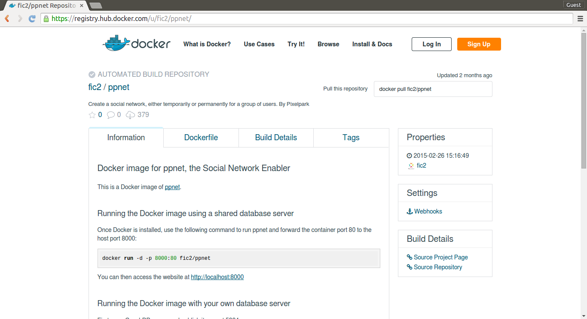

Using FIC2Lab runner
TL;DR
Use a prepackaged VM to host software enablers using a nice web interface. Powered by Docker and Panamax.
Get started:
- Launch VM in FIWARE Lab (FIWARE community account required required)
- Launch VM in Amazon EC2 (AWS account required)
- Many other options
Introduction
Many of the FI-CONTENT 2 Specific Enablers are server-side open-source software that you can easily reuse to build your own applications. For simplicity, these enablers have been packaged as Docker images that are publicly available. You can run them in your own machine or in the cloud.
What is Docker?
Docker is an open-source project for shipping and running applications inside lightweight software containers that can run anywhere. Any application that runs on Linux can be packaged as a Docker container.
Docker is very popular, and there are more than 70,000 Dockerized applications at the DockerHub Registry
How can I use the Docker images of the Specific Enablers?
You can deploy and manage our Docker images in different ways:
- using command-line tools in their own machine
- using command-line tools in a remote machine in the Cloud (any provider, including FIWARE Lab Cloud)
- using the FIC2Lab runner web-based tool to manage an instance on FIWARE Lab Cloud (best for beginners, limited for advanced users)
Our Specific Enablers are available as public Docker images in the FIC2Lab DockerHub repository
The following subsections will show the different ways in which you can run SEs.
Run SEs using the FIC2Lab runner web-based tool (on top of FIWARE Lab Cloud)
FIC2Lab runner is a tool that automatically sets up for you a running VM instance with a Docker host and a web UI on top of the FIWARE Lab Cloud infrastructure. You don't need to know anything about the FIWARE Lab Cloud, it will configure all the infrastructure, network, security, etc.
However, you will need to have a FIWARE Lab account and request a community upgrade in the Lannion region. The community upgrade grants you the right to allocate a public IP address within the cloud.
You can request your account and the community upgrade at https://account.lab.fiware.org
Once you have received a confirmation of your upgrade to a community account, you can go to the FIC2Lab runner wizard where you will be guided through the steps to create your own run environment.

Once you click on the button to start creating your environment, the wizard will go through a number of steps that set up everything that you need on FIWARE Lab Cloud. If everything goes right, you should see a pop-up with the URL to your dedicated management console.
Some of the things that can go wrong are:
- You are not logged in with your FIWARE Lab account.
- You don’t have a community account in the selected region.
- Your quota of public IP addresses or VM instances is full.
- There is an issue in the selected region. Try again in a few minutes or file a ticket.
Once you go to your dedicated Panamax management console, you will be able to deploy and manage applications that will be publicly available online, listening on different ports of your public IP address.
There’s 2 types of artifacts that can be deployed:
- Images: individual Docker images. When deployed, they are called services.
- Application Templates: linked sets of Docker images. When deployed, they are called applications, composed of one or more services.
The user interface provides a built-in search capability that can search any public Docker image repository through Docker Hub, including the FI-CONTENT 2 repository. It will search as well public Application Templates from Panamax.io. You can also select from the list the featured templates and images.
Let’s select the Social Network SE and click on “Run Template”. This will trigger under the hood the download and launch of an application with one image: “fic2/ppnet”. It will open the management dashboard for this application and show a spinning wheel that means that the deployment is taking place.
Categories help you structure your application in tiers. If you are creating a multi-tiered application using multiple Docker images, you can add more images to your application here.
At the bottom of the screen, the application activity log shows the detailed status of your application (the CoreOS Journal).
You can manage the settings of the services within your application. Let’s click on the only service deployed in this application: ppnet. From this page you can:
- Bind ports
- Link services
- Set environment variables
- Mount host volumes
- Pass arguments to the services entry point
For convenience, all the exposed ports of a Docker image are bound to the outside in a randomly generated port (in the 49000-50000 range). You can change that in the “Ports” tab of the service configuration, as shown below.
Run SEs using command-line tools in your own machine
Our software is packaged as standard Docker images. You can easily launch them from a terminal in your own machine.
If you are familiar with Docker, you can find the Docker images and the instructions in the FIC2Lab DockerHub repository
Installing Docker
Docker runs natively on any recent Linux. It can be used in Windows and Mac OS X using boot2docker, which installs VirtualBox with a guest Linux for you.
To get it running on your machine, follow the Docker installation instructions.
Under Mac OS X, you can use Kitematic, a nice user interface (also installs VirtualBox with a guest Linux).
You can also deploy it to different Cloud providers easily using Docker Machine.
Running a SE from the command line
We assume you have installed Docker on a Linux machine, or using boot2docker on a Windows or Mac.
Find your SE on the public FI-CONTENT 2 repository FIC2Lab DockerHub repository.
Then follow the instructions there. For instance, here are the instructions to run the Social Network SE:
This will download the Docker image for ppnet, run it in a Docker container and forward the container port 80 to the host port 8000:
docker run -d -p 8000:80 fic2/ppnet
This will produce the following result:
Unable to find image 'fic2/ppnet:latest' locally Pulling repository fic2/ppnet
b454781957ed: Download complete
511136ea3c5a: Download complete
a5b60fe97da5: Download complete
390a00bdb439: Download complete
af7c9ae40363: Download complete
84cde1578c13: Download complete
d81ff9276ee7: Download complete
9520277322c9: Download complete
Status: Downloaded newer image for fic2/ppnet:latest
a12d72b85f092c288d30ae6d0562e9861de8625e60aa985ff186ec075f929da7
Once the download is complete, the container will be up and running and we will get a container ID in the console. To check all the running containers, type:
\$ docker ps
CONTAINER ID IMAGE COMMAND CREATED STATUS PORTS NAMES
a12d72b85f09 fic2/ppnet:latest "/usr/local/bin/run. 44 seconds ago Up 43 seconds 0.0.0.0:8000-\>80/tcp mad\_goldstine
You will notice the port redirection from host machine (0.0.0.0) port 8000 to container port 80. A random name will be generated if none is specified.
Run SEs using command-line tools in a remote machine in the cloud
Docker Inc. develops a tool called docker-machine that you can use to automatically set up a docker host machine somewhere, and it can target cloud providers, including FIWARE Lab.
You will need to allocate at 1 virtual machine instance with 1 public IP address. We will assume you have a Community account with enough free quotas in a FIWARE Lab region, for instance Lannion2.
Preparing the cloud environment
There is one step that needs to be done manually in the FIWARE Lab Cloud Portal: the creation of a security group to allow inbound connections to the instance. You can name it, e.g. “docker-machine-sg” and you must open the following incoming TCP ports:
- 22: docker-machine will create its own keypair and SSH to port 22 to connect to the instance
- 2376: the docker client in your local machine will be configured to connect to the remote docker daemon in the instance that listens on port 2376
- 32768-33768: when launching docker containers using docker run -P (note the capital P), docker will randomly expose the service on a port starting from 32768 and increased for each new service.
You will also need to retrieve the following information:
- username: the e-mail address you use to login in FIWARE Lab
- password: your FIWARE Lab password
- tenant name: the name of your project at the top left part of the portal, which is normally 'username cloud'
- region: the region where your Community account has the right to allocate instances and public IPs, e.g. Lannion2
Setting up the tools
Install Docker Machine following the Docker Machine installation instructions
Load the environment variables to target the FIWARE Lab node, e.g.:
export OS\_REGION\_NAME='Lannion2'
export OS\_TENANT\_NAME='username cloud'
export OS\_USERNAME='emailaddress'
export OS\_PASSWORD='password'
export OS\_AUTH\_URL='http://cloud.lab.fi-ware.org:4730/v2.0/'
export OS\_AUTH\_STRATEGY='keystone'
Docker Machine will use these environment variables to connect to OpenStack.
Creating and managing the remote Docker host on FIWARE Lab
The following command will use your credentials to create a small instance with an Ubuntu 14.04 image connected to the specified network, using the previously created security group docker-machine-sg and associating a public IP address from the specified pool. These parameters were tested in Lannion2 region, you need to change them for other regions.
\$ docker-machine create \\
-d openstack \\
--openstack-flavor-id="2" \\
--openstack-image-id="7be3296f-dcc4-494f-ba97-dd572475024c" \\
--openstack-net-name="node-int-net-01" \\
--openstack-floatingip-pool="public-ext-net-01" \\
--openstack-sec-groups="docker-machine-sg" my-host
This will produce the following output:
Creating machine...
To see how to connect Docker to this machine, run:
docker-machine env my-host
The instance is up and running. You should now configure Docker client to manage it remotely.
\$ docker-machine env my-host
export DOCKER\_TLS\_VERIFY="1"
export DOCKER\_HOST="tcp://195.220.224.42:2376"
export DOCKER\_CERT\_PATH="/home/tai/.docker/machine/machines/my-host"
\# Run this command to configure your shell: eval "\$(docker-machine env my-host)"
\$ eval "\$(docker-machine env my-host)"
You can now use the Docker client as if you were logged into the target machine.
\$ docker ps
CONTAINER ID IMAGE COMMAND CREATED STATUS PORTS NAMES
\$ docker run -d -P fic2/ppnet
Unable to find image 'fic2/ppnet:latest' locally Pulling repository fic2/ppnet
b454781957ed: Download complete
511136ea3c5a: Download complete
a5b60fe97da5: Download complete
390a00bdb439: Download complete
af7c9ae40363: Download complete
84cde1578c13: Download complete
d81ff9276ee7: Download complete
9520277322c9: Download complete
Status: Downloaded newer image for fic2/ppnet:latest
a12d72b85f092c288d30ae6d0562e9861de8625e60aa985ff186ec075f929da7
\$ docker ps
CONTAINER ID IMAGE COMMAND CREATED STATUS PORTS NAMES
a12d72b85f09 fic2/ppnet:latest "/usr/local/bin/run. 29 seconds ago Up 28 seconds 0.0.0.0:32768-\>80/tcp silly\_hypatia
This launches the ppnet Social Network Enabler on a random port. The Docker daemon will use ports 32768 and up for random ports. Since they were opened in the security group that was created previously, the service is publicly available online. You can find out the public IP address through the Cloud Portal or with the following command:
\$ docker-machine url
tcp://195.220.224.42:2376
The following command will stop the host VM instance with the running containers:
\$ docker-machine stop my-host
Stopping OpenStack instance... MachineId=2c07c0d8-b76b-4626-9f0e-20eff2ab0c18
This will terminate the instance, disassociate the public IP address and remove the generated keypair:
\$ docker-machine rm my-host
Deleting OpenStack instance...
Successfully removed my-host
Run SEs locally or remotely using a graphical user interface for Mac OS X
Kitematic) is a OS X application to simplify the use of docker. By default, it uses docker-machine to create a Linux instance using VirtualBox in the local OS X machine and deploy Docker containers in it.
The following figures depict how easy it is to search the DockerHub for FI-CONTENT 2 enablers, create an instance of an enabler and see the running web application.
Kitematic has a button (4th at the top) to open a terminal in the target machine to use the Docker command-line client.

Since Kitematic uses docker-machine underneath to launch the target host machine, it can be tweaked to target remote host machines in the cloud.